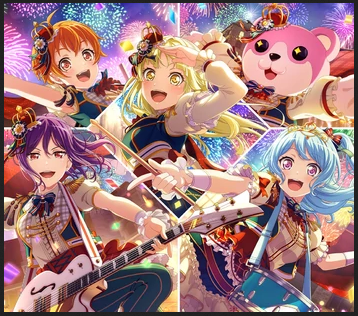

Characters, Cast and Instruments
In-fiction, Hello, Happy World! were started by Kokoro Tsurumaki, an extravagantly rich girl with the goal of "making the world smile" and the resources to plausibly make it happen. They are eclectic and eccentric, pulling aesthetic and musical influence from circuses, big-band, and occasionally hip-hop. They are one of two bands with a DJ, and the only band for whom that DJ is an enormous pink bear (actually a girl in a mascot suit).
Hello, Happy World! do not perform as a live band, though their frontwoman has made appearances for short sets at a couple of live shows. Several of their members have solo music careers outside the context of this franchise.
Characters, Cast and Instruments
- Vocals - Kokoro Tsurumaki (Miku Itou)
- Guitar - Kaoru Seta (Azusa Tadokoro)
- Bass - Hagumi Kitazawa (Yuri Yoshida)
- Drums - Kanon Matsubara (Moe Toyota)
- DJ - Michelle/Misaki Okusawa (Tomoyo Kurosawa)
Hello, Happy World! - Sample Tracks